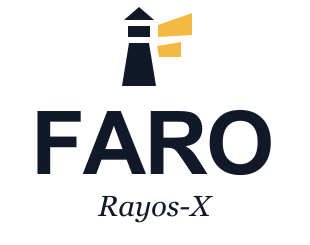
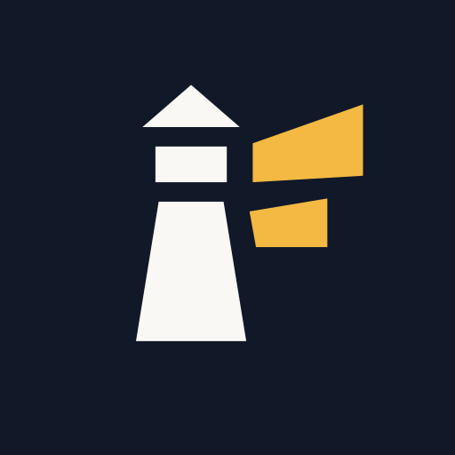
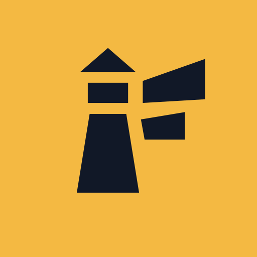

FARO RAYOS-X / SISTEMA DE IDENTIDAD
01.0 · 2026
Antes de firmar,
mira más allá.
Claridad para arrendar.

01 / FIRMA VERTICAL
02 / MONOCROMÍA


03 / ICONOS DE APLICACIÓN
Tinta
#111827
Papel
#FAF8F5
Haz
#F4B942
FARO
/
Rayos-X
Orientación · Evidencia · Claridad